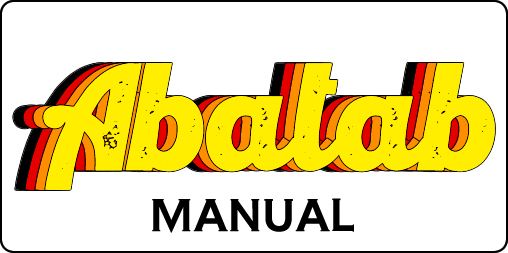

Abatab v22.11.0
There are a few changes that need to be made to the following files:
- DocFx/docfx.json
- DocFX/index.md
- DocFX/toc.yml
DocFx/index.html
TBD
DocFx/toc.yml
DocFx/toc.yml should look like this:
Building/rebuilding the documentation
To build/rebuild the Abatab documentation:
- Clean the Abatab solution
- Rebuild the Abatab solution
The documentation is created in https://github.com/spectrum-health-systems/Abatab/docs
Verifying the documentation
DocFx allows you to host the documentation via localhost, which makes it easy to verify any modifications.
- Open a terminal in the
docs/folder - Type "
docfx serve" - Point a web browser to http://localhost:8080/
GitHub Pages
If you use GitHub pages, and point to /docs, the documentation will be available on the GitHub repository.
Abatab is developed by A Pretty Cool Program